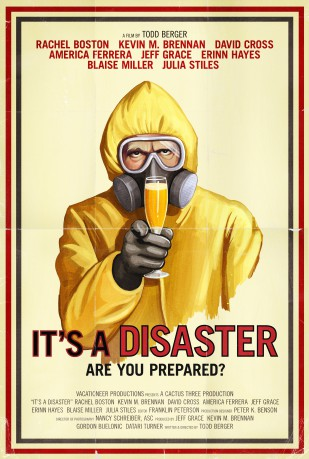

#5560 It's a Disaster - Bist du bereit?
Alternativ: It's a Disaster
 
 IMDB-Wertung: 6.5 / 10
IMDB-Wertung: 6.5 / 10  Metascore: 0
Metascore: 0 
Eight friends meet for their monthly couples brunch. But what starts as an impromptu therapy session/airing of domestic grievances takes a sudden, catastrophic turn when the city falls victim to a mysterious attack. Trapped in the house and unsure of their fates, these seemingly normal people become increasingly unhinged to surprising results.
Jahr: 2012
Dauer: 90 Minuten
FSK: 12
Land: USA Studio: OscilloscopeTonspuren: DTS - ,
Untertitel:
Auflösung: 1080p (1920x816) Größe: 9021 MB
Genre: Drama, Komödie
Regisseur: Todd Berger
Drehbuch: Karoline Herfurth
Soundtrack:
Darsteller:
- Rachel Boston als Lexi
- Kevin M. Brennan als Buck
 David Cross als Glen
David Cross als Glen America Ferrera als Hedy
America Ferrera als Hedy- Jeff Grace als Shane
 Erinn Hayes als Emma
Erinn Hayes als Emma- Blaise Miller als Pete
 Julia Stiles als Tracy
Julia Stiles als Tracy- Jesse Draper als Dog Walker
- Laura Adkin als Jenny
- Rob McGillivray als Gordon
- Todd Berger als Hal
- Will Coleman als Public Radio Host
- Helena Wei als Emergency Broadcaster
Datei: X:\2012(G-M)\It's a Disaster - Bist du bereit (2012, FSK12, 1920x816).mkv seit 17.02.2017
Festplatte: HD 2012(A-M)
 Es gibt insgesamt 112 Filme in der Gruppe '2012(G-M)'
Es gibt insgesamt 112 Filme in der Gruppe '2012(G-M)'